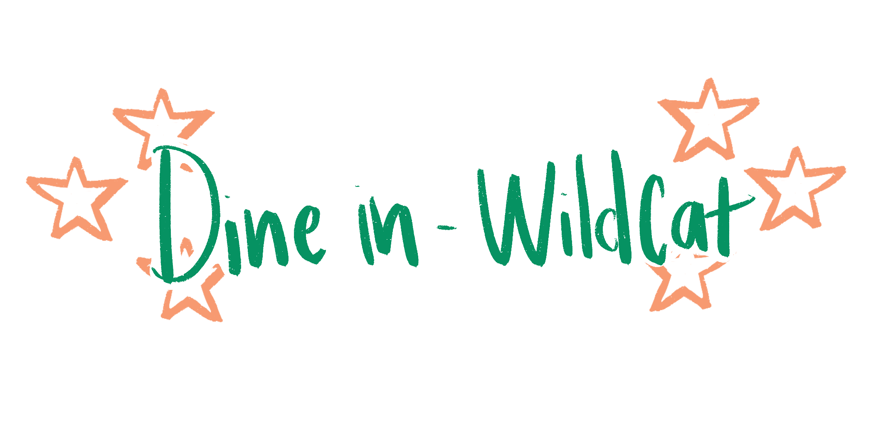
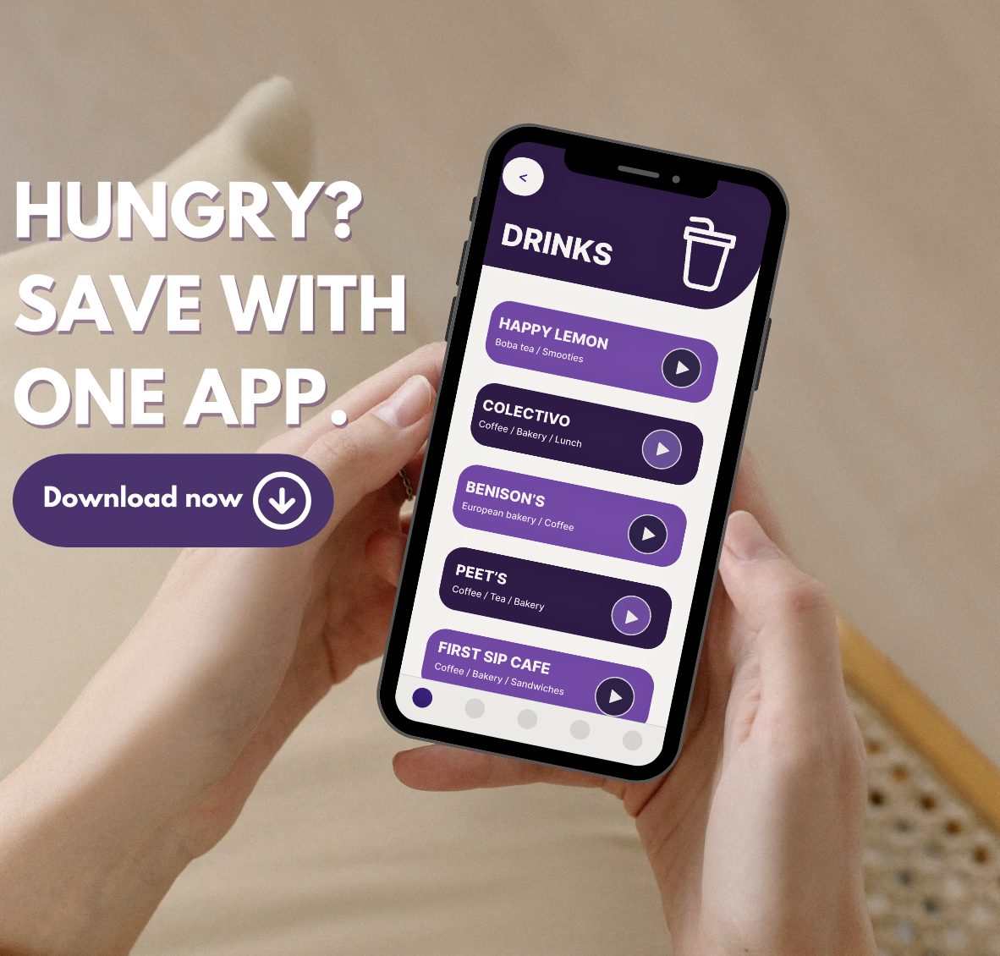
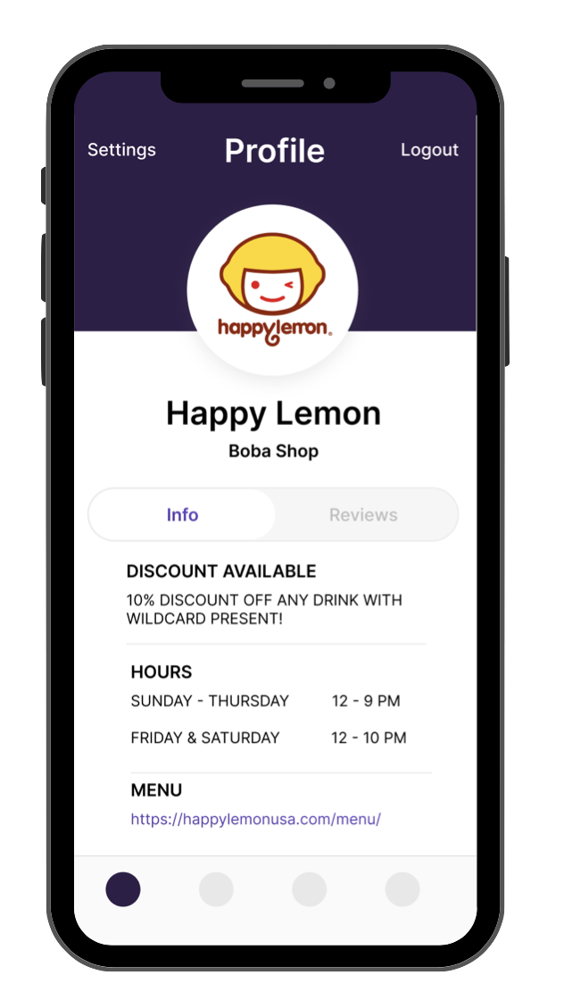
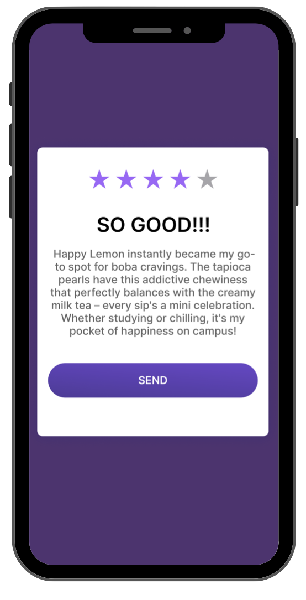

This innovative app bridges the gap between student life and local gastronomic delights, offering a seamless experience enriched by exclusive discounts. In designing Dine-In Wildcat, I focused on creating a user-friendly interface using JavaScript for dynamic content, HTML5 and CSS3 for structure and style, React Native for cross-platform mobile development, Firebase for backend services, and APIs for integrating restaurant data and managing discounts, ensuring a seamless tool for the Northwestern community to explore local dining options.
Detailed Description
Introducing "Dine-In Wildcat," a transformative app catering to the dynamic campus life and Evanston explorers. This innovative tool bridges the gap between student hunger and local culinary excellence. Seamlessly connecting users with a curated list of restaurants around campus and downtown Evanston, "Dine-In Wildcat" enhances the dining experience by offering exclusive discounts and personalized recommendations based on user preferences. The app's intuitive design makes it easy to search for dining options, view menus, and apply discounts with just a few taps.
Process
In developing "Dine-In Wildcat," I began by conducting thorough research on the dining preferences and habits of Northwestern students. I used this data to design wireframes and prototypes that focused on user-friendly navigation and a visually appealing interface. I then implemented the front-end using HTML5 for structure and CSS3 for styling, ensuring the app was responsive and accessible across various devices.
For dynamic content and interactive features, I utilized JavaScript. I chose React Native for mobile development to ensure the app could be used on both iOS and Android platforms, providing a consistent user experience. Firebase was used for backend services, including user authentication, database management, and real-time data updates. I integrated various APIs to fetch restaurant data and manage discount offers, ensuring real-time updates and accuracy.
Impact
Through strategic partnerships with local restaurants and continuous user feedback, "Dine-In Wildcat" aims to revolutionize how students engage with their local dining scene. By leveraging technology to streamline transactions and enhance accessibility, this app empowers students to make informed dining choices while supporting local businesses.
Future Plans
Looking ahead, "Dine-In Wildcat" plans to expand its features to include real-time restaurant wait times, dietary preference filters, and integration with campus event schedules. By incorporating user-centric design principles and cutting-edge technology, the app will continue to evolve to meet the diverse needs of its growing user base. Future updates will also include features like loyalty programs, user reviews, and integration with social media platforms to enhance user engagement and satisfaction.

hi

hi

hi

hi